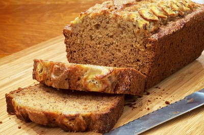
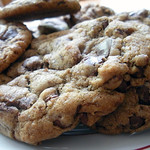
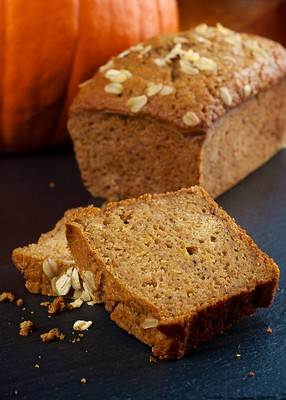

Bananna Bread Recipe
Banana Bread
This Banana Bread is like no other. It is a mosit loaf with strong banana flavor. This recipe is highly enjoyed by my family and friends keep reading to learn how to make the best Banana Bread ever.
Recipe by Sophia Schaeffer
| Prep Time: |
Cook Time: |
Total Time: |
| 15 min |
1 hr |
1 hr 15 mins |
| Servings: |
Yeild: |
| 12 |
1 9x5-inch loaf |
Tips when Baking
- The more ripe the bananas the better the outcome will be.
- To mash the bananas the most effcient way is to use a fork.
- If you use a smaller pan make sure you modify the baking time.

Directions
- Preheat the oven to 350 degrees F. After that lightly grease a 9x5-inch loaf pan.
- Mix flour, baking soda, and salt in a large bowl. Beat brown sugar and butter with an electric mixer in a diffent large bowl until there is a smooth consistency. Combined the eggs and mashed bananas until blended. Stir banana mixture with flour mixture until well combined. Pour batter into your greased loaf pan.
- Bake in the heated oven until a toothpick inserted into the center comes out with nothing on it, around 60 minutes. Let bread cool in pan for ten minutes, then put onto a wire rack to cool completely

Tools you will need
- Measuring cups
- Measuring spoons
- 9x5-inch pan
- Toothpick
- Mixing bowls
Ingredients
- 2 cups all-purpose flour
- 1 teaspoon baking soda
- ¼ teaspoon salt
- ¾ cup brown sugar
- ½ cup butter
- 2 ⅓ cups mashed overripe bananas
| Nutrition Facts |
| 229 |
9g |
35g |
4g |
| Calories |
Fat |
Carbs |
Protein |
Other Recipes
Banana Chocolate Chip Cookies

Pumpkin Bread
